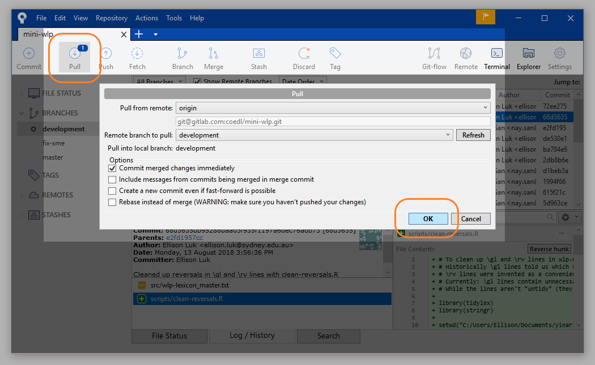
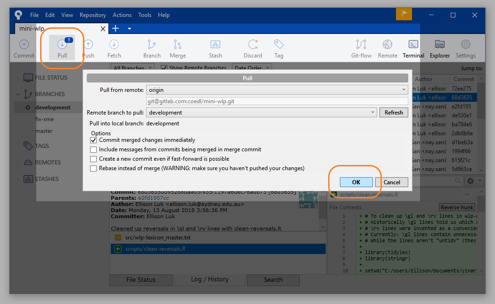
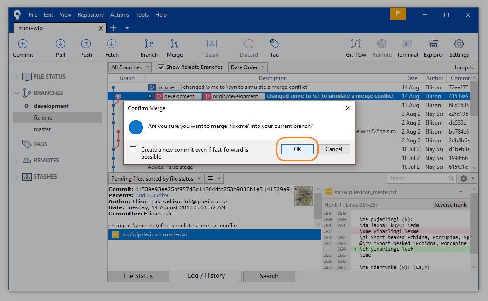
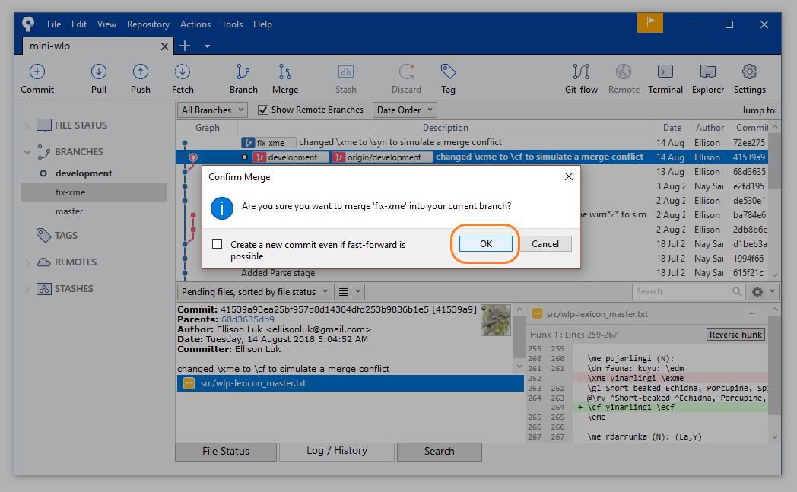
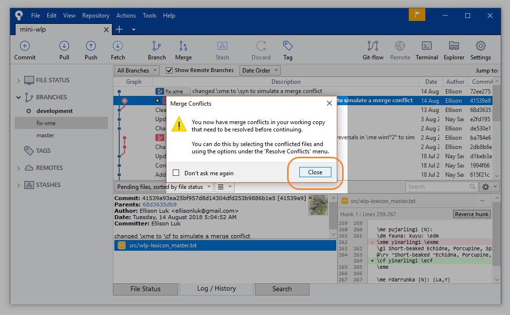
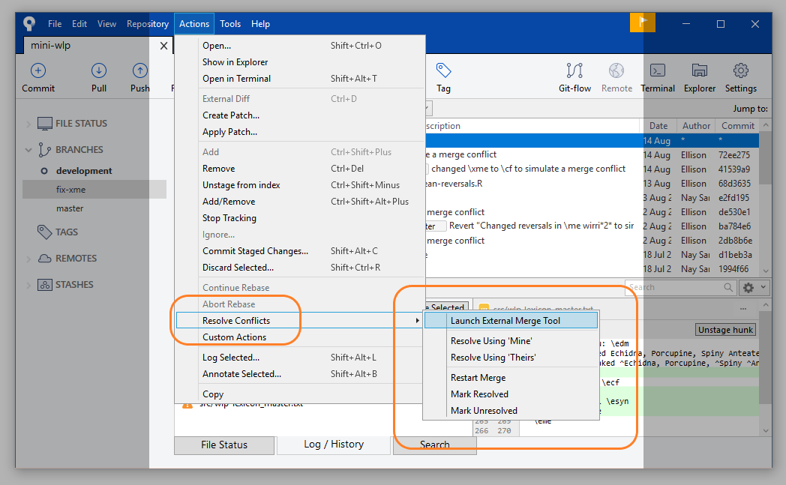
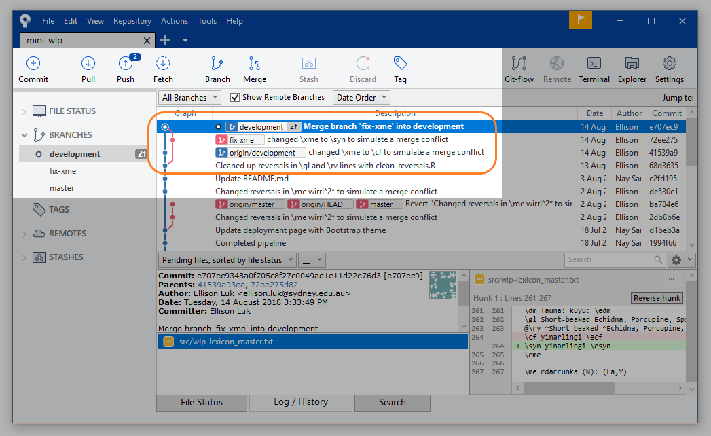
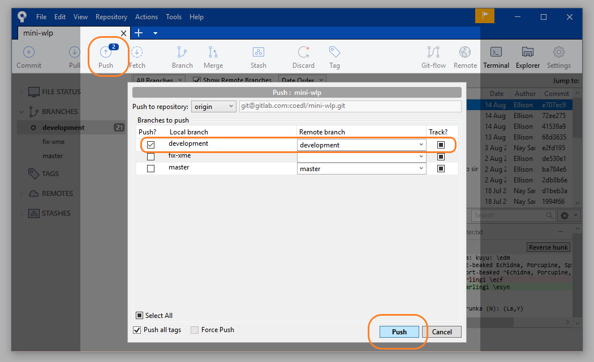

Git problem solving
Ellison Luk
2018-08-15
Source:vignettes/wlp-git_problemsolving.Rmd
wlp-git_problemsolving.RmdResolving Merge Conflicts
A merge conflict arises when you try to merge two branches with contradictory lines, which may arise when two collaborators edit the same line. This can be avoided if your team is clear on what lines each member is working on, but Sourcetree allows you to fix them before completing the merge.
As an example, let’s make one edit: changing one line to a line, and commit that (in a fix-xme branch)

Commit change
Checkout development branch, refresh the repository status and pull the latest changes (1 has been flagged).

 

Now attempt to merge the fix-xme branch into `development branch.
 

Sourcetree has detected a conflict, and has flagged the conflicts in the files. You can follow the window’s advice to resolve them with Sourcetree, but you can also do it in the text editor.

Let’s resolve them in the text editor. Open the file with the detected conflicts and search for “<<<<<<< HEAD”. Each conflict will have this open tag (HEAD refers to the remote version; i.e. the version that your collaborator(s) created). The closing tag will be labelled with your branch: the version that you created and are trying to merge with.

Resolve conflict in text
Confer with your collaborators on how you want to resolve the conflict, delete the tags and move on to the next conflict. When you have finished resolving the conflicts, save the file(s) and commit to the branch you are merging into (i.e. development).
??? You may run into some weird files in your File Status tab: leave these unstaged, and make sure the file you want to stage has the yellow square icon. Keep an eye on the diff to make sure that you are committing the correct changes.

Unstaging conflicted files
Now you can commit (you can leave the commit message as is).
Committing resolved file
Congratulations! You have successfully merged your branches! It is now ahead of the remote branch by 2 commits(?), and you may now push it.

You can now check to see that your commit has made it on the Git web user interface.

Git UI commit successful
Undoing Commits
There are several ways you can undo a commit.
You may right click your erroneous commit and select Reverse commit...: this will create a new commit that reverts your changes. Your log will still record your commit, and you can still go back to them.
Reverse Commit
You can also undo specific ‘hunks’, by selecting Reverse hunk on a specific change. This will initiate a new process of staging and committing.
Reverse Hunk
Alternatively, you can do a “hard reset” of the branch. Select the commit you want to revert to, right click, and select Reset current branch to this commit. For local-only (i.e. unpushed) commits, this will erase your history back to the commit you select. You may reset your branch to a remote commit, but this will not affect the commits on the remote repository.
Reset Branch
Stashing Changes
Stashing your changes is the alternative “saving” method of committing: you stow away the changes you have made without contributing them to the branch. This is necessary when you’re switching between branches.
Select Stash on your uncommitted changes.
Select Stash
Give your stash a name and confirm.
Name Stash
Your stash will appear under Stashes in the sidebar, and you can go on to whatever you were doing.
Your Stash
Later, when you return to working on your changes, you may choose to Apply them back to your branch (returning them to where you last left them), or simply Delete them from your branch altogether.
Stash Options